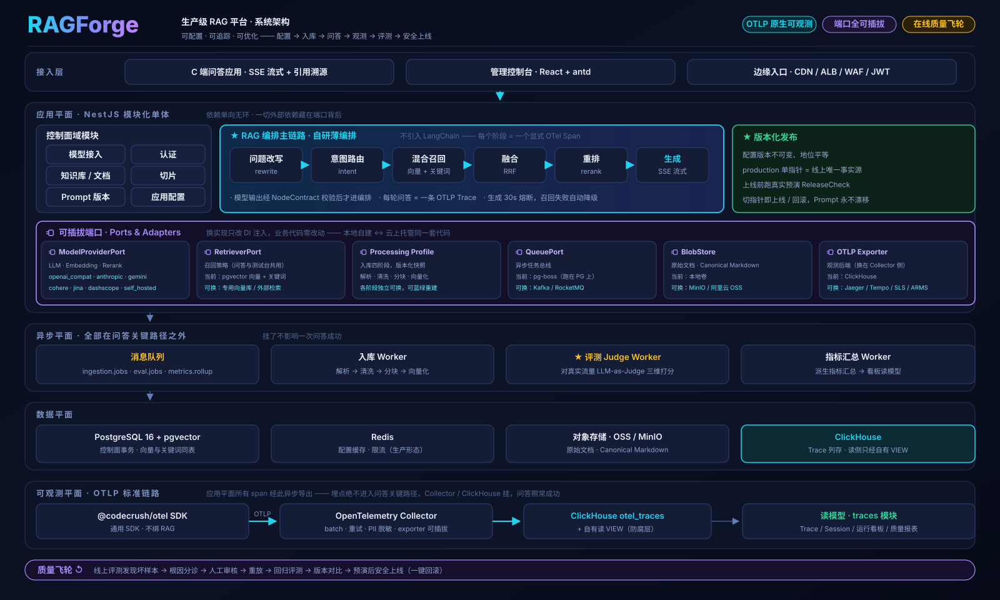

RAGForge 完整技术设计
一个把「一次问答」拆成可配置、可追踪、可优化流水线的通用 RAG 平台。本文自底向上讲清每个子系统的职责、数据结构、关键函数与详细流程走向。
本文由 7 路并行代码调查汇总而成，所有结论均以实际源码（file:line、函数签名、SQL）为准，设计文档（docs/design/001–021）仅作对照。文中「代码与文档偏离点」是调查发现的实现与设计文档不一致处，已在附录汇总。
00系统概览
RAGForge 是一个通用 RAG 平台（课程问答只是示例 mock 数据）。它把一次问答拆成可配置、可追踪、可优化的流水线，并用一套「质量飞轮」把线上问答的坏样本持续变成下一轮优化的输入。
一句话架构
前端（React+antd）只经 @codecrush/contracts 的 Zod 契约调后端 REST/SSE；后端（NestJS 模块化单体）把外部依赖全藏在端口背后（ModelProviderPort / RetrieverPort / BlobStore / Queue），控制面落 Postgres+pgvector 单库，问答链路每一步发一条标准 OTLP span，经 Collector 落 ClickHouse，读侧只经自有 VIEW 防腐层访问。
阅读指南
- §01 系统架构 — 五层分层、8 条不变量、模块地图与依赖方向。
- §02 核心数据流 — 三条端到端数据流（问答 / 可观测 / 飞轮）的全局视图。
- §03–§09 — 七个子系统逐个深入：职责、关键文件、数据结构与表、关键函数、详细流程走向、技术方案、接口依赖。
- §10 附录 — REST 端点总表、代码与设计文档偏离点清单。
01系统架构
NestJS 模块化单体，一切外部依赖藏在端口/连接串背后，本地 docker-compose ↔ 阿里云托管零改动切换。低 QPS（持续 ≤10 / 突发 ≤50）决定了单实例后端 + 单 Postgres + 单 ClickHouse + 单 Collector 全部够用，不上集群。

分层与执行平面
8 条不可违反的不变量（Invariants）
| # | 不变量 | 代码落点 |
|---|---|---|
| 1 | 埋点绝不进入问答关键路径：Collector/CH 故障不得导致问答失败或增加可感延迟 | SDK 有界队列丢 span；读侧冷库返回空；脱敏异常被吞 |
| 2 | 应用只吐 OTLP，从不直写 ClickHouse；读侧只经自有 VIEW 防腐层 | otel 包零 @clickhouse/client 依赖；traces 只读 VIEW |
| 3 | 一切外部依赖藏在端口背后，本地↔云零改动切换 | ModelProviderPort / RetrieverPort / BlobStore / Queue |
| 4 | 模型 API Key 永不明文回传前端，存储加密 | AES-256-GCM envelope，展示先 decrypt 再 mask |
| 5 | messages.trace_id 外键必写，每条回答可回溯 trace | chat 落库写 traceId（逻辑关联 CH） |
| 6 | 模型原始输出不进入编排：结构化节点必经 ContractVersion 校验，失败修复一次再 Fallback | executeStructured 四道关卡 |
| 7 | 生产 Prompt/Contract 不漂移：配置版本固定 PromptVersion，PromptVersion 固定 ContractVersion | 四个 PromptVersion FK 列 + 不可变 |
| 8 | production_config_version_id 是线上配置唯一事实源；停用优先于指针 | casProduction CAS + resolvePublic 四态 |
模块地图
后端分三层：app/（组合根）→ modules/（19 业务域）→ platform/（8 横切基建）→ packages/（3 共享包）。依赖方向严格 app → modules → platform → packages，同层显式 import、禁止循环。
| 子系统 | 模块 | 职责 |
|---|---|---|
| 配置 | models · prompts · node-runtime | 模型接入（协议适配）· 不可变 Prompt 版本 · 结构化输出内核 |
| 知识 | knowledge-bases · documents · ingestion · chunks | KB 配置 · 文档生命周期 · 四阶段入库管线（34 文件）· 切片存取 |
| 服务 | applications · chat · conversations · retrieval | 不可变配置版本+发布 · RAG 编排+SSE · 会话历史 · 多路召回 |
| 观测 | traces（含 metrics） | 只读 ClickHouse（经 VIEW）· Trace/Session/运行看板读模型 |
| 飞轮 | evaluations · eval-runs · gaps | 在线 LLM 裁判 · 离线跑分/版本对比 · 问题池/知识缺口（~10.8k 行） |
| 基础 | auth · users · health · agents* | JWT · 用户 · 健康检查 · legacyM7 旧模型，已被 applications 取代未删除 |
agents（M7 旧模型）与 applications（M7b 重写：不可变版本 + production 单指针 CAS + 异步 ReleaseCheck）两套 REST/schema/前端页面并存，仍注册在 app.module.ts。但运行时问答链路走 applications.resolvePublic()，OrchestrationService 完全不注入 AgentsService——agents 是待清理技术债，非在用。
eslint.config.mjs 用 no-restricted-imports 机械强制 5 条包边界（frontend 禁 import otel、contracts 禁依赖 apps、otel-conventions 零依赖、otel 禁 import contracts/clickhouse、除 3 个聚合根外全仓禁 import gaps）。但跨业务模块的 DAG 没有机械强制，只靠文档 + review + madge --circular 兜底——003 已自我订正，代码验证一致。
02核心数据流
三条端到端数据流构成骨架：问答主链路（提问 → 答案+引用）、可观测数据流（每步 span → Trace/看板）、质量飞轮闭环（坏样本 → 缺口 → 补库 → 回验 → 评测集）。本章给全局视图，细节见后续各章。
数据流一 · 问答主链路（一次 POST /chat）
入口是 chat.controller.ts:41 的 SSE 端点。OrchestrationService.run() 是 AsyncGenerator<ChatStreamEvent>，resolvePublic 故意留在生成器体内（首个 next() 才触发），使「未上线/停用」异常在写 SSE 头之前冒泡成干净 404/403，而非中途断流。
编排层四节点全部只消费 NodeRuntimeService 产出的 typed output——经 normalizeStructuredOutput → JSON.parse → outputSchema.safeParse → extraValidate 四道关卡、修复一次仍不过就走确定性 fallback()。OrchestrationService 从不 JSON.parse 模型返回。这是 Invariant 6 的落地。
数据流二 · 可观测（每步 span 如何变成 Trace / 看板）
三层「不进关键路径」防御：① SDK 侧 BatchSpanProcessor 有界队列满则丢 span 不阻塞；② Collector 侧持久队列缓冲下游抖动；③ 读侧 ensureTraceViews() 对冷库直接返回空而非报错。运行看板指标（兜底率/P95）不是查询时全表聚合，而是 codecrush_metrics_1m（AggregatingMergeTree）由增量物化视图预卷积，查询时才 xxxMerge 合并态——P95 的 t-digest 必须跨桶合并后再算分位。
数据流三 · 质量飞轮闭环
依赖拓扑（eval-runs.module.ts:20 更正过的方向）：gaps 在最上层 → eval-runs 中间层（导出 EvalSetsService+ReplayService 给 gaps）→ evaluations 最底层纯判分。三者都不直接 import traces 模块——各自维护独立 ClickHouse repository 直读共享物化视图，耦合在数据层而非接口层。
03平台底座 + Telemetry SDK
platform/* 是 NestJS 模块化单体的横切基础设施层（8 子目录），加 3 个共享包构成「应用只吐 OTLP、物理存储归 infra」的可观测分层。这一层不依赖任何 feature module，被 22+ 个域 repository 复用。
关键文件
| 文件 | 职责 |
|---|---|
| config/config.schema.ts | envSchema（Zod）全部环境变量 + 默认值，ConfigModule.forRoot({validate}) 启动期 fail-fast |
| persistence/persistence.module.ts | @Global，DRIZZLE token 工厂，事实上唯一持久化入口（被 22+ repository 注入） |
| persistence/pgvector-type.ts | vector1024 customType + VECTOR_DIMENSION=1024（全平台唯一权威常量） |
| queue/pg-boss-queue.adapter.ts | PgBossQueueAdapter：publish/subscribe/schedule + ensureQueue 幂等建队 |
| queue/role-gated-queue.adapter.ts | RoleGatedQueueAdapter：按 PROCESS_ROLE(api/worker/all) 门控是否真正消费 |
| security/encryption.ts | AES-256-GCM envelope 加解密 + 掩码 |
| packages/otel/src/trace.ts | withSpan / startManualSpan / runInContext / forceFlushTelemetry |
| packages/otel-conventions/src/index.ts | 零依赖属性 key 字典：GEN_AI.* / RAG.* / CODECRUSH_SPAN_KIND.* |
关键函数
API Key 加密（security/encryption.ts）
// AES-256-GCM，随机 12 字节 IV，主密钥 MODEL_API_KEY_ENCRYPTION_KEY（32 字节 base64） encrypt(plaintext): string // → v1:${ivB64}:${tagB64}:${ctB64} decrypt(envelope): string // split 校验 version=="v1"，setAuthTag 后解密 maskApiKey(plaintext): string // len<8→"****"；否则 首3+"****"+末4
唯一消费方 models.service.ts：创建/更新 encrypt，调用 decrypt，展示前先 decrypt 再 maskApiKey。明文永不出 models 域（Invariant 4）。
OTLP 发射原语（packages/otel/src/trace.ts）
| 原语 | 行为 |
|---|---|
withSpan(name, {attributes}, fn) | 自动生命周期：自动挂到 context.active() 为父，finally 里 end。撑不住跨 yield。 |
startManualSpan(name, opts, parentCtx?) | 手动生命周期：创建但不 end，调用方自行 end。用于跨 async generator yield 边界的根/流式 span。 |
runInContext(ctx, fn) | = context.with(ctx, fn)，不新建 span。让下游 withSpan 子 span 显式挂到某父 ctx。 |
003 描述的 trace.llm / trace.retrieve / recordUsage 语义封装在代码里不存在（全仓搜索只命中文档本身）。真实 API 面只有上表三个通用原语，「语义」全靠调用方手写 attributes 字面量 + otel-conventions 常量字典。这反而让「otel 包不感知业务」更彻底。
详细流程走向
流程 A · 应用启动 bootstrap 顺序
- 首条 import 就是 tracing
main.ts:3
import "./tracing"先于 reflect-metadata/NestFactory，确保 OTel 自动埋点在任何被 instrument 的 http/pg 模块加载前挂载。 - 起 telemetry
读
process.env（此时 DI 容器还不存在）→ parseProcessRole → startNodeTelemetry：OTLPExporter → 套 RedactingSpanExporter → BatchSpanProcessor(500ms) → NodeSDK.start()。 - 分流
PROCESS_ROLE==="worker"→ bootstrapWorker（createApplicationContext 无 HTTP）；否则 bootstrap（NestFactory.create）。同一套 Provider，差异全由 RoleGatedQueueAdapter 门控体现。 - 配置校验 + 连接池 + 队列
envSchema.parse 失败即起不来；PersistenceModule 建 pg 连接池；QueueModule.onModuleInit 调 boss.start()。各 Processor.onModuleInit 调 subscribe/schedule——非本角色进程被门控成 no-op。
流程 B · pg-boss 一个 job 从 send 到 work
- publish
业务先落库改状态，再
queue.publish(JOB, data, {singletonKey, retryLimit:1})→ RoleGatedQueueAdapter（恒透传）→ PgBossQueueAdapter → ensureQueue → boss.send。 - 消费
Processor.onModuleInit 已 subscribe；本进程角色不在
QUEUE_CONSUMER_ROLES[key]内则被门控 no-op。pg-boss 把 job created→active，逐条await handler(job.data)。 - 终态广播
handler 完成触发 DocumentChangeNotifier 等 fan-out（入库终态通知蓝绿重建/评测 gold 过期），监听方异常只 warn 不冒泡。
多处注释写「幂等由 singletonKey 保证」。但追 pg-boss v12.25.1 源码：本仓 6 队列都用 standard 策略，而 singleton_key 唯一索引只在 short/singleton/stately/exclusive/key_strict_fifo 下才建——standard 下两次相同 singletonKey 的 send 会插入两条独立 job 行。真正兜底幂等的是业务表：ingestion 靠 document_processing_runs partial unique；evaluations.repository 注释明确点破了这个坑并改用 eval_manual_score_jobs 的 ON CONFLICT DO UPDATE WHERE 原子占位。pg-boss 实为「异步执行 + 至少一次投递 + cron」传输层，不是分布式锁层。
04模型接入 + 结构化输出内核
两个模块：models 把三类模型接入收敛成「协议适配层」（不绑厂商，(type, protocol) 是路由键）；node-runtime 是结构化输出运行时内核，保证「模型原始输出绝不进入编排」。
模型接入 · 协议适配
ModelProviderPort 是唯一契约，下游只认「模型类型 + modelId」，协议差异全被适配层吸收：
interface ModelProviderPort { testConnection(config): Promise<TestModelResult>; chat(config, messages, opts?): Promise<ChatResult>; chatStream(config, messages, opts?): AsyncIterable<ChatStreamChunk>; embed(config, texts, opts?): Promise<EmbedResult>; rerank(config, query, documents, topN?, opts?): Promise<RerankResult>; }
唯一实现 ProtocolDispatchAdapter（387 行，仅经 MODEL_PROVIDER_PORT token 注入）按 (type, protocol) 查纯函数 request builder 表分发。fetch/超时/密钥擦除/错误归一集中在适配器一处。
| type | 合法 protocol（PROTOCOLS_BY_TYPE） | 认证 |
|---|---|---|
llm | openai_compat · anthropic · gemini | openai_compat/cohere/jina/dashscope/self_hosted 用 Bearer；anthropic 用 x-api-key；gemini 用 x-goog-api-key 头（防日志泄漏，不用 ?key=） |
embedding | self_hosted · openai_compat · gemini · cohere · jina | |
rerank | self_hosted · openai_compat · cohere · jina · dashscope |
各方法独立超时：CHAT=60s、EMBED=60s（批量向量化不能沿用 10s 探针预算，防 worker 卡死）、RERANK=5s（检索路径最紧）。embed() 额外校验维度必须恰好 1024。testConnection 一切失败返回 {ok:false} 不抛（友好提示），其余失败一律 throw。
结构化输出内核 · node-runtime
NodeContract<TInput,TOutput,TReserved> 是四个固定节点（rewrite/intent/reply/fallback）各自契约：三个 Zod schema + systemInstructions + fallback() 纯函数 + 可选 extraValidate()。
这两个文档高频词在代码里没有同名类型：ContractVersion 落地为普通 number 参数 + registry.ts 两级索引，resolve(node, version) 查不到就 throw（拒绝隐式回退到最新版本——这正是「防漂移」的全部机制：没有默认值、没有静默升级）。TypedNodeOutput 对应 ExecuteStructuredResult/StreamTextResult/StreamChunksSummary。
三层内容 → 两条消息（compiler/assemble.ts）
// 三个内容来源拼成两条 ChatMessage rendered = renderTemplateStrict(promptBody, stringVars, node) // 层2：管理员模板渲染 envelope = { ...input, ...reserved } // 层3：运行时数据 return [ { role:"system", content: `${systemInstructions}\n\n${rendered}` }, // 层1+层2 { role:"user", content: JSON.stringify(envelope) }, // 层3 ]
renderTemplateStrict 遇保留/非法字段直接 throw——是保存期静态校验之外的第二道运行时防线。（注：001/003 称「三层」指内容来源，011 称「两层」指消息数，代码实为 3 来源拼 2 消息。）
详细流程 · 一次结构化节点执行（executeStructured）
- 解析 Contract + 前置校验
registry.resolve(node, contractVersion)查不到即终止。inputSchema/reservedDataSchema任一 safeParse 失败 → 立即fallback()，不调用模型。 - 编译 + 首次调模型
assembleMessages拼两条消息 →models.chat(modelId, messages, {structuredOutput})（schema 来自z.toJSONSchema(outputSchema)，三协议各自下发：openai response_format、anthropic 强制 tool_choice、gemini responseSchema）。 - 四道关卡校验
normalizeStructuredOutput剥 Markdown 围栏 →JSON.parse→outputSchema.safeParse（结构）→extraValidate（动态值域）。validateSteps 里明确区分两步，驱动前端按阶段渲染图标。 - 失败 → 修复一次
追加一条 user 消息「上次哪里错了，请重新输出严格符合 Schema」（不重新渲染管理员模板）→ 第二次调模型，repairRetryCount=1。
- 仍失败 → 确定性 Fallback
执行
contract.fallback(input, reserved)（纯函数零 IO）。全流程最多两次模型调用，失败路径永远收敛到可预测的 fallback。
reply 节点走 streamTextChunks（真·逐 token）：手动 span 跨 yield 存活；首 token 熔断 FIRST_TOKEN_TIMEOUT_MS（默认 15s，非文档说的 30s）用单一 deadline 覆盖「流开始到首个非空 delta」累计窗口（修过「每帧空 delta 重置计时器」bug）；已发 token 后断流保留 partial 不清空；全程无 token 则整段切 fallback。
同一套代码：prompts.service（试运行）、chat/orchestration（在线编排）、applications/release-check（发布门禁真实预演 compileAndSample）——任何一方都不得自行拼 Prompt 或解析模型 JSON。
05知识入库管线
四个模块构成「知识库配置 → 文档生命周期 → 入库处理管线 → 切片存取」。ingestion（34 文件）是全平台最复杂子系统：解析 → 清洗 → Canonical Document → 分块 → 向量化 → 单事务落库。
核心表
| 表 | 关键列 |
|---|---|
knowledge_bases | embeddingModelId(创建后锁定,FK RESTRICT)· chunkTemplate(general/qa/custom,legacy)· defaultProfileId/Version· activeVersion/buildingVersion(蓝绿双指针)· status(ready/building/failed) |
documents | status(pending/queued/processing/failed/ready)· blobKey· parsedText(canonical md)· chunkVersion· profileOverride*· lifecycle jsonb |
document_processing_runs | 不可变 Run 快照：profileSnapshot jsonb(入队前 structuredClone 冻结)· partial unique WHERE status IN(queued,running)(同文档同时只一条活动 Run) |
chunks | embedding vector(1024)(HNSW cosine)· tsv tsvector(GENERATED, cjk_bigram + GIN)· version/seq· unique(docId,version,seq)· index(kbId,version) |
四阶段管线（Profile 驱动，端口化）
| 阶段 | 端口 / 实现 | 要点 |
|---|---|---|
| 解析 | PdfParser(pdf-parse v2)/WordParser(mammoth)/TextParser | 按 DocumentType 分发；pdf 用 result.pages 逐页判空 |
| 清洗 | MarkdownBasicNormalizer | 逐 block 跑 cleanText，丢弃空 block，重算 blockRanges |
| 分块 | General/Qa/Custom Chunker | 见下三种差异 |
| 向量化 | ModelsService.embedTexts | 按 batchSize(默认 10) 逐批，密钥解密留 models 域内 |
#~###### 标题层级切段，段内贪心合并至 512 token，超长先 hardSplit。section 记标题路径。问：/答： 配对一对一切片，无匹配退化 General。##/### 分层 → 表格按行/其余按句 → buildHeader 把《KB》第N课·小节写进正文。详细流程 · 一篇文档的完整生命周期
- 上传 → 落 BlobStore（status: pending）
documents.service.ts:139：先对整批做类型白名单 + magic bytes 校验（全部通过才落盘，避免部分提交）→
blobKey = kb/{kbId}/{docId}/original.{type}（服务端拼装防路径注入）→ blobStore.put → insert(pending) → 追加 lifecycle upload。 - 入队（pending → queued）
createRun：解析有效 Profile（显式>文档覆盖>KB 默认>chunkTemplate 兜底）→structuredClone(def)冻结快照 → insert(queued) → publish({processingRunId}, singletonKey=run.id)。 - Worker 取出（queued → processing）
processRun幂等三层判定通过 → running → blobStore.get 取回原始文件 →pipeline.run(ctx)（ctx.snapshot=run.profileSnapshot，唯一行为源，不重读注册表）。 - 管线四阶段 + 三道质量门
解析 → assembleCanonical → 质量门·解析后(空则 PARSE_EMPTY) → 清洗 → 质量门·清洗后(删减比>0.8 CLEAN_SUSPICIOUS；>50MB CANONICAL_TOO_LARGE) → 分块 → 质量门·分块后(空/超 8192 token) → mapChunkPages 锚点定位页码 → 逐批 embedTexts → 拼 ChunkDraft[]。
- 单事务落库（processing → ready）
chunksRepo.replaceVersion(docId, kbId, targetVersion, drafts)：向量已算好，把「删旧+插新」包进单个 PG 事务——检索永远读到全旧或全新，无空窗。→ Run succeeded、doc ready(chunkVersion=targetVersion)。 - 失败路径（processing → failed）
任意阶段抛 IngestionError（10 种错误码中文映射）→ Run/doc failed。ready/failed 均为终态。
① pg-boss singletonKey（弱，见 §03）；② processRun 内部判定：Run 已 succeeded/failed → 短路，running 且 <15min → 判并发跳过，超时 → 判僵尸重跑；③ DB dpr_active_doc_unique partial unique 兜底。真正原子性靠第②③层。
知识库全量蓝绿重建
- 开建
startRebuild：buildingVersion=activeVersion+1、status=building → 先把文档 id 落进内存快照 rebuildDocIds，再逐个入队（顺序是死锁修复关键：终态判定只认这份快照，避免重建期新上传的 pending 文档卡死判定）。 - 逐文档独立入库
每篇走完整生命周期，目标版本是新 buildingVersion；检索侧此时仍读旧 activeVersion，不空窗。
- 终态触发切换
每文档终态回调 onDocumentTerminal，直到快照内全部终态 →
finalizeSwitch：① 携带前移未被处理文档的切片版本号(防被误清) ② 原子updateVersions(active=building, building=null, ready)③ 异步分批 deleteByVersion 清旧版(每批 LIMIT 1000)。
PROCESSING_PROFILES_ENABLED 默认 true（新路径 createRun/processRun，有不可变快照）。legacy 路径 enqueue/processDocument（执行时现读 kb.chunkTemplate，无冻结快照）代码完整保留，按 payload 有无 processingRunId 分流，两路共用同一 DefaultIngestionPipeline。另：Profile.parser.mode(layout/ocr) 与 chunker.config 已定义但当前管线未消费——M4.1b 占位。
06检索 + RAG 编排 + 问答
产品核心链路。retrieval 是全平台唯一一套检索实现（chat 编排与检索测试台共用同一个 RetrieverPort）；chat 的 OrchestrationService 是自研薄编排内核，用 AsyncGenerator 串起改写→意图→召回→融合→重排→生成，只消费 typed output。
检索 · PgHybridRetriever
retrieve(req, observer?, signal?) 把「查询 + 单 KB 参数」变成排序过的 RetrievalHit[]（{chunkId, docId, docName, text, section, vecScore, kwScore?, rerankScore?, finalScore}）。chat 对多 KB 各构造一条请求分别调用。
| 阶段 | 实现（chunks.repository.ts） |
|---|---|
| 向量召回 | pgvector 1 - (embedding <=> query::vector) 相似度，ORDER BY embedding <=> query 命中 HNSW，恒过滤 version = kb.activeVersion |
| 关键词召回 | 中文 cjk_bigram_text（连续字符两两重叠切分）+ to_tsquery 用 |(OR) 拼接 + ts_rank_cd(tsv, tsq, 32) 归一化到 [0,1) |
| 融合 | 加权线性和 vecWeight·vec + (1-vecWeight)·kw，不是 RRF（finalScore 契约锁死 [0,1]，RRF 量级不落该区间，免归一优势被抵消） |
| 重排 | 候选池 min(topK, 80) 送 rerankTexts，成功覆盖 finalScore；try/catch 失败/超时(5s) 打 rag.degraded.rerank + 回调 observer，保留融合分继续 |
Promise.allSettled([向量, 关键词])：向量是核心信号，失败硬抛；关键词失败仅降级纯向量、打标、回调 observer。关键：关键词降级时 finalScore 直接取 vecScore 不再乘 vecWeight——否则单路分数被无谓腰斩。
意图路由（两级意图表，014）
意图节点 outputSchema 是 z.enum(INTENT_OUTPUT_KEYS)——三协议在解码层把 enum 当硬约束，模型物理上选不出闭集外的值。availableIntents 恒注入全表，真正路由在编排层：
function resolveRetrievalKbIds(intent, cfg, kbRows) { if (intent === CHAT) return []; // 闲聊：不检索 if (intent === UNKNOWN) return cfg.kbIds; // 无法归类：全量召回 const matched = kbRows.filter(k => k.intentKey === intent || k.intentKey == null); return matched.length ? matched.map(k=>k.id) : cfg.kbIds; // 绑定∪通配，空则回退全量 }
详细流程 · 一次完整问答（span 级）
- 入口 + 解析配置
chat.controller.ts:41 注册断连回调 → run() 首个 next() 触发
resolvePublic(agentId)（异常在写 SSE 头前冒泡成 404/403）→ buildResolvedConfig 四节点并行取 promptBody/contractVersion/modelId。 - 建根 span
startManualSpan("rag.pipeline", {span.kind:chain, rag.prompt.version_id, rag.preview:false})，写 codecrush.io.input=query、gen_ai.agent.id/name、enduser.id。 - 问题改写（span: execute_structured, llm）
executeNode(rewrite) → executeStructured，产出
{rewrittenQuery, keywords}，spanEnrich 写回 rag.rewrite.query。 - 意图识别（span: execute_structured, llm）
enum 硬约束分类，spanEnrich 写 rag.intent/rag.route.kb_names。若 intent=CHAT → 短路不检索，直接兜底分支。
- 多路召回（span: retrieval.retrieve × N KB）
resolveRetrievalKbIds 算目标 KB → 逐 KB 并行
Promise.all(retrieval.test)，每个内部套 retrieval.embedding + 可选 retrieval.rerank 子 span → mergeHits 按 chunkId 去重、全局 finalScore 降序取 topN。 - 兜底判定
threshold = rerankEnabled ? rerankThreshold : 0.2；空召回 → empty_retrieval；topScore < threshold→ low_similarity，转兜底。 - 组装上下文 + 生成（span: stream_text, llm）
先
yield citation（引用先于正文，供右栏渲染）→ streamTextChunks("reply", ..., {retrievalContext, citations}, chainCtx) 逐 deltayield token。超时发 error 不发 done；契约校验失败降级 fallback 文本。 - 派生指标 + 落库 + 收尾
buildResult 用正文
[n]角标反查算 confidence(被引用分数最大值)/coverage(full/partial) → persist 写 conversations+messages(traceId/citations) →yield done→ finally 写质量布尔 + metrics.applyTo(chain) + chain.end()。
span 树：rag.pipeline(chain) ─ execute_structured(rewrite) ─ execute_structured(intent) ─ retrieval.retrieve×N（内含 embedding+rerank）─ stream_text(reply/fallback)。全部经 runInContext(chainCtx) 显式挂父。
runWithConfig 被复用：线上 run()（persist:true）、离线批评测 runForEvaluation()（persist:false + evalRunId 打标 + 硬超时）、单条重放 runForReplay()。eval-runs / gaps 的重放走的都是这份代码，只是收尾回调不同——保证「评测重放 = 生产路径」。
mergeHits 把不同 KB 各自的 finalScore 直接全局排序——若某些 KB 命中经 rerank、另一些因 rerank 超时降级(finalScore=融合分)，两种量纲被当同一把尺子排序，标定有偏差。设计选择是「记录偏差 + confidence 仅在全体 KB 走同一路径时可信」，而非现在解决。
07应用管理与发布
「发布纪律」的唯一承载体。应用 = 一份完整 RAG 运行配置的容器；配置内容是不可变追加的版本；production_config_version_id 单指针是「线上跑哪个版本」的唯一事实源，一切上线/回滚/下线都是对这一列的受门禁 CAS。
核心表
| 表 | 关键列 |
|---|---|
applications | slug(创建后不可变)· enabled· evalGateEnabled· productionConfigVersionId(裸列无 FK,归属靠 CAS 的 EXISTS 守卫)· deletedAt |
application_config_versions | 四节点 prompt*VersionId(FK RESTRICT)· 四节点 *ModelId+rerankModelId· nodeParams/retrievalParams/fallbackParams jsonb· 无 update 方法（不可变靠「没有写路径」保证） |
application_config_version_tags | 自定义标签· 复合 FK(configVersionId,appId) 保证标签指向版本必属同应用· production/v 是保留字不作为行存在 |
application_release_checks | configFingerprint· status(queued/running/passed/failed/expired)· issues jsonb· expiresAt(通过后 15min 短期 artifact) |
三态解析 · resolvePublic
resolvePublic(idOrSlug) { findVisibleAppByIdOrSlug(idOrSlug) // deleted/missing → 404 if (!enabled) throw 403 // 停用优先于「未上线」 if (!productionConfigVersionId) throw 404 // 未上线 return buildResolvedConfig(app, productionConfigVersionId, preview=false) } // 拒绝顺序严格：deleted → disabled → production missing → resolved // findVisibleAppByIdOrSlug 先按 UUID 正则短路（避免非 UUID 撞 PG 22P02 冒泡成 500）再退 slug
另两个变体：resolveByTag（管理员标签预览）、resolveForTest（指定任意版本）。config_fingerprint = 四节点 prompt/model + rerank + 三组 params + KB 集合（含 intentKey）规范化排序后 sha256；providerRevision 用 deploymentId ?? name 做身份，避免「仅改展示名」造成假 409。
详细流程 · 从新建到上线
- 新建应用 → v1（未上线）
create → validate(config)（KB embedding 一致 / 四节点 model 类型启用 + PromptVersion node 匹配）→ createApplicationWithV1 单事务插 applications(productionConfigVersionId:null) + v1 + KB 关联。
- 编辑草稿 → 保存为新版本
编辑态只在前端；createVersion 取 max(version)+1 插新行，从不触碰 production 指针——这正是「新版本默认未上线」的机制来源。
- 发起 ReleaseCheck（静态门禁 → 异步预演）
startReleaseCheck → staticGate 7 项（≥1 KB embedding 一致 / 四 PromptVersion 编译无错 + ContractVersion 受支持 / 四模型类型正确 / rerank 合法 / 值域边界），失败 422 不建行不入队；通过 → computeFingerprint → insert(queued) → publish(RELEASE_CHECK_JOB)。
- Worker 真实预演
ReleaseCheckProcessor 幂等/僵尸判定 → 若 samplingEnabled（默认关）对四节点
compileAndSample（用与生产完全相同的 NodeRuntime）；无论是否采样都跑 collectEvalGateIssues（评测软门禁，issue 强制降级 warning，永不阻断）→ hasBlockingIssue（排除法severity!=="warning"）判 passed(expiresAt=now+15min)/failed。 - 上线 = 切指针（四连校验 + CAS）
publishProduction 四连校验：check 归属 → status=passed → 未过期 → 重算 fingerprint 匹配（依赖变了就 409）→ casProduction 一条 SQL 同时做 CAS + EXISTS 归属守卫（指针无 FK 的唯一补偿）+ 软删排除，0 行时区分 409(并发)/400(不属于该应用)。
- C 端解析 + 回滚
此后 resolvePublic 立即读到新指针（无缓存直读表）。回滚无独立方法——对历史版本重走 ReleaseCheck+publish，旧版本若引用了此后被禁用的模型会重新失败，杜绝「曾上线即免检」。
eval-runs 在自己的 onModuleInit 里把回调注册进 applications（registerEvalGateProvider 单值 / registerDeletionGuard 数组），使 applications 完全不 import eval-runs，编译期依赖方向单向。评测软门禁的「软」是机器保证：collectEvalGateIssues 强制把任何 issue 降级 warning，纵深防御做在消费方而非信任生产方。
009 头仍标 not-implemented（实际已交付）；旧 agents 模块未删并存；production 指针仍无复合 FK（只有 CAS EXISTS 守卫）；tryVersionChat 按版本对话测试端点仍是硬编码桩；resolveForTest 不检查 enabled（停用应优先的唯一例外）。
08可观测与 Trace 读模型
应用侧只发 OTLP，Collector 落 ClickHouse 标准表 otel_traces，traces 模块经自有只读 VIEW 把裸 span 还原成 Session→Trace→Observation 三层读模型。指标汇总（metrics）与 trace 读模型同居 TracesModule——没有独立的 dashboard/metrics 模块。
三层防腐 VIEW（infra/clickhouse/views/）
| VIEW / 表 | 作用 |
|---|---|
codecrush_trace_spans | flatten 每 span 一行；列名规范化；kind 优先取 SpanAttributes['codecrush.span.kind'] 否则退回原生 SpanKind |
codecrush_traces | 按 root chain span 聚合；根判据 span.kind='chain'（不能用 ParentSpanId=''，因 HttpInstrumentation 给每请求加了 POST 父 span）；token 根值优先、子 span 求和兜底；四质量布尔 |
codecrush_sessions | 按 session_id 聚合 traces（排除 preview） |
codecrush_metrics_1m | AggregatingMergeTree + 增量 MV，只读根 chain span，按分钟桶+应用+模型 xxxState 卷积；存中间态不 finalize（P95 t-digest 须跨桶 merge 后再算分位） |
详细流程 · 一条 span 到 Trace 详情
- 发出 → 导出
业务 startManualSpan/withSpan 写 gen_ai.*/rag.*/codecrush.* 属性 → span.end() → BatchSpanProcessor(500ms) → RedactingSpanExporter 脱敏 → OTLP/gRPC 到 Collector。
- Collector → CH
batch(1s/256) → clickhouseexporter 写 otel_traces（create_schema:true 首次自动建表，TTL 30d）。
- 懒建 VIEW
后端首次读请求触发 ensureTraceViews()：先
EXISTS TABLE otel_traces探测，冷库直接返回空（不轮询不报错）；表存在则逐条 command() 建 VIEW，viewsReady 位缓存。 - 查详情
GET /traces/:traceId（正则校验 32 位 hex）→ findByTraceId 查 codecrush_trace_spans 拿全部 span → 纯 TS 侧 buildTraceMeta 聚合头部（不发第二条 CH 查询）→ 前端 traceDetail.ts 纯函数重建 span 树/瀑布/面板（零额外后端请求）。
运行看板指标计算路径
- 写侧 delta
orchestration 在 chain 根 span 结束前写 rag.fallback.used + 四质量布尔 + metrics.applyTo 的 token/model——根 span 自带整条 trace 的汇总值（因多 span 经 batch 分散在不同 INSERT 批次，MV 靠跨行 JOIN 求和在增量下做不干净）。
- 增量卷积
codecrush_metrics_1m_mv 每次新行写入即按
span.kind='chain' AND rag.preview!='true'命中，用 sumState/countState/quantileTDigestState 卷入对应桶。 - 查询合并 + 下钻
GET /metrics/overview → queryWindow 执行 sumMerge(fallback_count)/countMerge(qa_count) 得兜底率、quantileTDigestMerge(0.95) 得 P95（合并态查询时才 merge，允许任意时间窗跨桶合并不失真）。点指标 → GET /traces?quick=兜底 精确定位样本 trace。
① 004/015 写「命中引用详情页回 Postgres 取正文」，但代码没有这条回填路径——命中分表落在 span attribute rag.chunk.scores（含就地取的 doc 名，读侧纯 CH 不回 Postgres），chunks.controller 无按 chunkId 取正文的端点，Trace 详情页历史回放只见 doc/section/分数、看不到命中正文；正文只在问答当下的 SSE ChatCitation.text 出现一次不落 CH。② SIGNALS_SELECT 直接 FROM otel_traces 用原始列名，绕开了防腐 VIEW，与同文件 queryStages 经 VIEW 的做法不一致，偏离「读侧只经 VIEW」不变量。
09评测飞轮（在线质量 + 离线评测 + 知识缺口）
三个模块（~11700 行）串成闭环：evaluations 是「体检」、gaps 是「临床开药方」、eval-runs 是「回归考试」。
9.1 在线答案质量 · evaluations
对生产环境真实、非 preview 问答异步抽样（每 15 分钟一轮），独立 LLM Judge 算三维分数（Faithfulness/Answer Relevancy/Context Precision），经 OTLP rag.eval span 写入 ClickHouse 去重聚合。不修改、不等待、不阻塞问答关键路径。
详细流程 A · 在线打分
- cron 抢锁
*/15 * * * *→ processCycle → tryAcquireLease（条件 UPDATE 单实例互斥）→ 取复合游标(lastTs, lastTraceId)。 - 捞候选 + 抽样
listCandidates(preview=0, 游标之后) → 熔断（连续失败≥5）→ classifyRisk（failed/fallback/no_citations/confidence<0.6=高风险，100% 采样）→ 正常风险走 stableSample（sha256 稳定哈希）+ 日配额衰减。
- 去重 + 三维打分
findExisting(traceId, judgeVersion) 命中 → already_scored；否则组装输入（PG 原文 + 前 20 条 chunk 正文）→ 三 evaluator 顺序 await，各自 withJudgeRetry（修复式重试 3 次）。claims 为空 → null 不是 100 分。
- 写 rag.eval span
成功 emitSuccess（faithfulness 写
?? -1哨兵）/失败 emitFailure（只含 status=failed，不含分数）→ forceFlushTelemetry。 - 游标推进 + 落账本
finishCycle 单事务 upsert
eval_candidate_ledger+ 更新eval_watermarks——崩溃则本轮「无事发生」，租约到期后从旧水位重扫。 - CH 去重聚合
codecrush_eval_targets 用 argMaxState 按
(target_trace_id, judge_version)物理聚合；读查询先 argMaxMerge 去重（nullIf(-1)还原 NULL）再外层 count/avg——即使 worker 竞态各评一次也不重复计入。
低分样本如何流入知识缺口：不经 evaluations 任何 NestJS 方法——gaps 自建独立 CH repository 直查同一张 codecrush_eval_targets。两者唯一 NestJS 级耦合是 getSettings()（gaps 读 embeddingModelId；在线评测关闸时问题池收集器照样跑）。
9.2 知识缺口 · gaps（七态状态机）
自动收集坏样本 → embedding 相似度增量聚类成缺口簇 → 自动分诊根因 → 人审三步向导补库（无人审不入库是红线）→ 入库后自动回验 → 沉淀为 gold 用例。
详细流程 C · 飞轮闭环
- 收集（cron 每 30min）
listPoolCandidates(preview=0，四信号 OR：confidence<60 / fallback / no_citations / eval 三分 LEAST<70) → TS 侧复判。
- 聚类
聚类键用改写后的问题 → findNearestCluster(pgvector 最近邻) → 余弦 ≥0.85 归簇/建簇 → centroid CAS 更新（
WHERE freq=expected冲突重试 3 次）→ 幂等靠gap_items_source_trace_unique全局单列唯一（一条 trace 全局只入池一次）。 - 自动分诊
triageItem：精确率低+可信度低→missing；精确率低+可信度不低→retrieval；精确率高+忠实度低→generation。簇级
followUpRatio>0.5强制覆写 retrieval 永不 missing（结构性免疫多轮指代追问被误诊为「缺内容」）。只写 root_cause_auto，人工改判写 root_cause_manual（COALESCE 读取，worker 永不覆盖人工）。 - 补库三步向导
① draftFill LLM 草拟(drafting→reviewing) ② 人审本地编辑 ③ submitFill(reviewing→filled) → documents.upload 合成 Q&A 文档(autoParse) → attachFillDocument 登记文档 id。
- 入库后自动回验
GapVerificationNotifier 订阅 registerTerminal（非 notifyChanged，要覆盖「解析失败」终态）→ replayAndScore（复用 ReplayService，伪造 traceId 绕限频）→ leastOrNull（null-propagating）→ ≥80 verifyPass(verified) / <80 verifyFail(pending+recurred) / null verifyInconclusive(pending 不打复发标)。
- 沉淀 gold 用例
promote：resolveQuestion(rewrite_resolved 守卫) → 精确+语义(余弦>0.95)双层去重 → 跨域共享事务
db.transaction(tx => { evalSets.createCasesBatchTx(tx); repo.markEnteredEvalSetTx(tx) })（本仓首个跨域共享事务）→ 用例落入 eval-runs 域表(draft)。
① 状态机拓扑：submitFill 的 from:["reviewing"]，而 reviewing 只能由 LLM 草拟成功或恢复草稿到达（不存在跳过人审直接 filled 的边）；② 服务层：submitFill 在调 documents.upload 之前显式校验 status==="reviewing"（初版把校验留给下游 CAS 导致 upload 后才报错，已修）；③ upload 调用在代码里只有一个物理调用点。三者任一被绕过都不足以致命，「结构上不可绕过」。
9.3 离线评测 · eval-runs
维护 gold 评测集，对指定应用配置版本发起 run，worker 复用线上编排重放每题（不落会话、不发 rag.eval span、只存 Postgres，与在线读模型物理隔离），4 evaluator 打分产出综合分与逐用例报告，支持两 run 版本对比与上线软门禁。
详细流程 B · 离线 run
- 建集/标注 gold
新建用例即 draft；转 reviewed 时守卫
goldPoints.length===0 → 422（用req.status ?? row.status防已 reviewed 用例被清空 gold 仍保 reviewed）。CSV 导入逐行校验。 - 发起 run
reapAbandonedRuns（回收僵尸，唯一调用点无独立 cron）→ findActiveRun 命中 409 → 1 小时幂等窗口 409 → 撞
eval_runs_single_active_unique（全局同时最多 1 个活跃 run）→ publish(EVAL_RUN_JOB)。 - worker 双层循环
租约 → 外层 case / 内层 repeat → 断点续跑 → runForEvaluation(cfg, question, {runId, timeoutMs})（复用编排，persist:false，根 span 打
rag.eval.run_id不发 rag.eval，超时 AbortController 硬中断）。 - C-3 守卫 + 打分
timeout → verdict=timeout；error/空答案 → verdict=unscored（不调判分）；否则 scoreOffline Promise.allSettled 并发 5 evaluator（含 citation），任一 reject/null 记 NULL 绝不记 0。
- verdict + 落库
decideVerdict：4 项(含 correctness)取非 NULL argmin 为 minMetric，但 low/weak/pass 须 3 个 base 指标至少 1 个非 NULL。recordResult 先 UPDATE run(租约守卫，0 行即失租不 INSERT) 后 INSERT 结果行(绝不发 rag.eval span)。
- 版本对比
GET /eval/runs/compare?a=&b=：8 指标逐个 delta + significant(|delta|≥3 且两侧样本≥30)；逐 case classifyCase（等级下降或任一共同指标跌≥10 → regressed）。上线软门禁复用同一管线，永远只产 warning，fail-open。
gap-verification 的 replayAndScore 直接重放 representativeQuestion，没有像 gap-promote 那样做 rewrite_resolved 前置守卫。若簇代表问题恰好固化自带指代的原话，回验会拿带指代的问题重放、检索召不回、误判「复发」。团队已在 promote 路径加了守卫，但未同步到 verify 路径——唯一确认「设计已知、代码尚未修复」的功能性缺口。
10附录
REST 端点总表
共 23 个 controller。下表按子系统汇总主要端点（SSE 端点标 SSE）。
| 子系统 | 主要端点 |
|---|---|
| 模型 | GET/POST/PATCH/DELETE /models · POST /models/:id/test（连通性） |
| 知识库/文档/切片 | /knowledge-bases(含 POST :id/rebuild) · POST /knowledge-bases/:kbId/documents(批量上传) · POST /documents/:id/parse · GET /documents/:id/{lifecycle,content,processing-runs} · GET /documents/:id/chunks · POST /chunks/batch-delete |
| Prompt | /prompts · /prompts/:id/versions · POST …/try-run(试运行) · /prompts/:id/tags |
| 应用 | /applications/** · POST …/release-checks · PUT/DELETE …/production(上线/下线) · GET :idOrSlug/resolve |
| 问答 | SSEPOST /chat · POST /retrieval/test · GET /conversations |
| 观测 | GET /traces(12+ 维筛选) · GET /traces/export(CSV) · GET /traces/sessions[/:id] · GET /traces/:traceId · GET /metrics/overview · GET /metrics/apps/:id |
| 在线质量 | GET /eval/quality/overview · GET /eval/quality/traces/:id · POST …/score(手动) · GET/PUT /eval/quality/settings |
| 离线评测 | /eval/runs · GET /eval/runs/compare?a=&b= · POST /eval/runs/:id/stop · /eval/sets(含 cases/import) · SSEPOST /eval/replay |
| 知识缺口 | /gaps(list/summary/items) · POST /gaps/:id/{ignore,reopen,route-retrieval,split,merge} · PATCH /gaps/:id/root-cause · POST /gaps/:id/{draft-fill,resume-fill,submit-fill} · POST /gaps/{draft-gold,promote} |
| 基础 | POST /auth/login · GET /health · GET /api/docs(Swagger) |
代码与设计文档偏离点清单
本文调查中发现的、实现与 docs/design/* 表述不一致之处，均有 file:line 依据。这些是「代码为唯一事实」原则下值得回写文档或立 ADR 的点。
| 子系统 | 偏离点 |
|---|---|
| Telemetry | 003 描述的 trace.llm/trace.retrieve/recordUsage 语义 API 面不存在，真实只有 withSpan/startManualSpan/runInContext 三个通用原语 |
| 队列 | 多处注释称「singletonKey 保证幂等」，但 standard 策略下 pg-boss 不在 singleton_key 建唯一索引，实际靠业务表约束兜底 |
| node-runtime | 首 token 熔断默认 15s，非文档/口头说的 30s；全仓无 30000 常量 |
| Prompt 组装 | 001/003 称「三层」（内容来源），011 称「两层」（消息数），代码实为 3 来源拼 2 消息 |
| 应用 | 009 头仍标 not-implemented（实际已交付）；旧 agents 模块并存未删；production 指针无复合 FK；tryVersionChat 仍是桩；resolveForTest 不检查 enabled |
| 可观测 | 「命中引用详情页回 Postgres 取正文」的回填路径不存在（正文只在 SSE 出现一次不落 CH）；SIGNALS_SELECT 绕开防腐 VIEW 直查 otel_traces |
| 评测飞轮 | scoreOffline 实为 5 evaluator 并发（含 citation）；gap-verification 缺 rewrite_resolved 守卫（唯一「已知未修复」缺口）；reapAbandonedRuns 无独立 cron |
| 入库 | 新旧两条路径并存（PROCESSING_PROFILES_ENABLED 默认 true）；Profile.parser.mode(layout/ocr) 与 chunker.config 已定义未消费（M4.1b 占位） |
由 7 路并行代码调查 agent（覆盖平台底座 / 模型接入 / 入库 / 检索编排 / 应用发布 / 可观测 / 评测飞轮）读取实际源码后汇总。所有 file:line、函数签名、SQL、表结构均来自真实代码，设计文档仅作对照。行号可能随后续提交漂移，但结构性结论已核实。